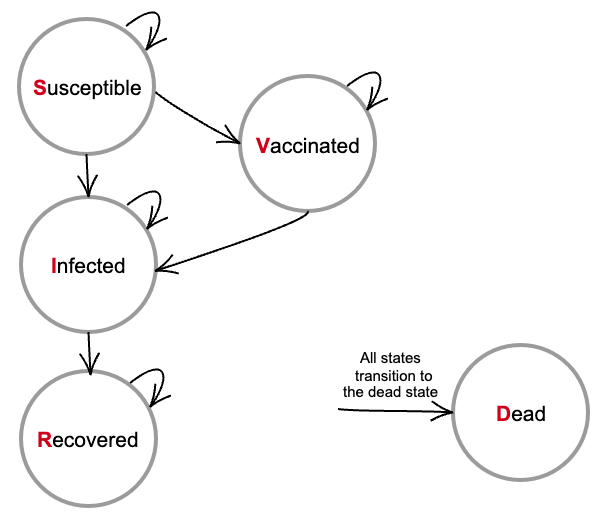

Learning R
NOTE: The code in this document has been created following the coding recommendations in Alarid-Escudero et al. (2019).
R basics
The following sections use several coding examples and follow the same structure as Davies (2016).
Matrices and arrays
Matrix
The matrix function has the following arguments:
datain a form of a vector,nrownumber of rows,ncolnumber of columns,byrow(logical) default isFALSEmeaning that the matrix is filled by columns,dimnamesa list of two elements containing the row and column names, respectively.
Example 1
Let us create a 2x2 matrix:
Note how R filled the matrix column-by-column since by default byrow = FALSE.
Example 2
What happens if you don’t specify the nrow and ncol arguments?
If nrow and ncol are not specified default is a single-column matrix.
Example 3
Let’s change the byrow argument to TRUE.
Note that the matrix’s first row was filled out before moving on to the next one.
Example 4
Let’s create a 2x3 matrix whose row and column names are indicated using dimnames.
Note that dimnames must be specified using a list.
Example 5
What if you don’t have enough data to fill the matrix?
If there is insufficient data to fill a matrix as specified by the user, the values will be recycled. This is important to note as it will not give an error, but a warning, and the matrix can still be used in other operations.
Sub-setting
We can subset values from a matrix by indicating matrix_name[row,column].
If the matrix rows and columns have names the names can be used to subset.
If you leave the row (column) value blank, it will extract the entire column (row).
Example
Operations with matrices
t()transpose of a matrix.diag()extract or replace the diagonal of a matrix, or construct a diagonal matrix. NOTE: Remember that you can always use?diagto get documentation about the function and its uses.Equally sized matrices can be added and subtracted.
%*%matrix multiplication same number of columns and rows.ncolandnrowcan be useful functions that check if two matrices can be multiplied.solve()returns the inverse of a matrix.
Arrays
Arrays are similar to matrices but can have more than 2 dimensions.
Example 1
An array with 3 rows, 4 columns and 2 layers, filled column-wise.
Example 2
Adding another layer.
Sub-setting
Conditionals and loops
if-else statement
An If-else statement requires a condition that returns TRUE or FALSE.
Basic structure:
Example 1
Example 2
We can have if-else statements without an else, however, they work only for conditions of length = 1.
Example 3
Nesting conditions.
Example 4
The switch function allows to evaluate an expression (EXPR) and choose from a list of alternatives.
for loops
Basic structure:
Example 1
A loop that prints the index of the current loop.
Note: as a practice, use names for your loop index that ends with _i, for example, iter_i, year_i, and ind_i; this will allow you to differentiate between the loop index and your other objects.
Example 2
Nesting for loops.
while loops
When you do not know how often the desired operations should be executed, you can use the while loop.
Basic structure:
Example 1
If we want to compute the factorial of any number.
Writing functions
Basic structure.
Example 1
A function that simply assigns three different objects.
Example 2
A function with multiple returns.
Example 3
A function with arguments.
Questions:
Does a function always require arguments? When is it necessary for it to have arguments?
What happened if you run
dummy1()and then get the objectaa?What happens if you run
bn <- dummy1()and then get the objectbn?What value would
dummy2()return?How many
returnelements can a function have?
Example 4
Ellipsis ...
Takeaways
- A list of arguments is not always required for a function to be executed.
- A function that does not have a
returnelement technically returns nothing; but it implicitly returns the last line of code. - A function can have multiple
returnelements, however, once it encounters a return, it exits. - Ellipsis allows you to pass additional arguments without having to first define them in the argument list, and these arguments can then be passed to another function call within the body of the code.
Applications
Markov models
This section is based on Drabo and Padula (2023) and follows the same example of hepatitis B. The coding sections have been created by me.
Introduction
Models can be a valuable tool for public health decision-making. They help to extrapolate the long-term effects of observed clinical trials and estimate the distribution of a population into different health states when implementing policy strategies.
Health (e.g., life years, quality of life) and economic (e.g., vaccination costs) outcomes can be estimated for each strategy considered.
Markov models depict how individuals move between health states based on their previous state probabilities.
Markov assumption: all states are independent of all pasts states.
Elements
Set of health states that are mutually exclusive (an individual cannot be in both states simultaneously) and exhaustive (includes all possible states).
Transition matrix that represents the transition of individuals in a cohort between different health states (constant or time-varying).
\[ T = \begin{bmatrix} q(s_1,s_1) & q(s_1,s_2) & q(s_1,s_3) \\ q(s_2,s_1) & q(s_2,s_2) & q(s_2,s_3) \end{bmatrix} \]
\(q(s_i,s_j)\) describes the transition probability from the current state \(s_i\) to the transition state \(s_j\).
The value of each transition probability ranges between 0 and 1.
Each row must sum to 1, as all the states are mutually exclusive.
- Transitions occur over a period, called cycle \(t\).
- The probability of being in a state \(S(t)\) can be denoted as:
\[ S(t) = S(0)\times T^t \]
where, \(S(0)\) is the vector of the probabilities of being in each state at the beginning of the simulation, \(T^t\) is the product of multiplying \(t\) state transition matrices.
- Set of rewards or payoffs (e.g., cost of benefits) associated to each state.
- If an individual is unable to leave a state once they enter it (e.g., dead), that state is considered to be an absorbing state, and any non-absorbing state is called transient.
Example: hepatitis B
- Five mutually exclusive health states: susceptible (S), infected (I), vaccinated (V), recovered (R), and dead (D).

- Cycle length 1 year.
- Time horizon 59 years (lifetime horizon).
- Model inputs usually come from published data, clinical trials (e.g., vaccine efficacy), transition probabilities from life tables, expert panels, among others.
- The proportion of susceptible people getting vaccinated each cycle is 0.10.
- 70% of susceptible people become infected each year.
- 0.0045% of the vaccinated individuals lose protection from the vaccine.
- 7 out of 8 people with hepatitis C recover.
- The probability of death is 0.002 for susceptible, vaccinated, and recovered individuals, and 0.006 for infected individuals.
- Susceptible cohort population aged 20 years.
Steps into developing a model in R
- Parameterization of the model. We will create a function that takes the model inputs as arguments and returns a list containing all the model parameters.
- Markov model function: Now that we have a function that collects all the model inputs into a list, let’s create a function that takes the model parameters and returns the distribution of health states at each step.
- Simulation: We run the Markov model with the specific model inputs.
- Plot outcomes of interest
References
Citation
@online{gracia_olvera2024,
author = {Gracia Olvera, Valeria},
title = {Learning {R}},
date = {2024-09-11},
url = {https://vgraciaol.github.io/rprogramming.html},
langid = {en}
}